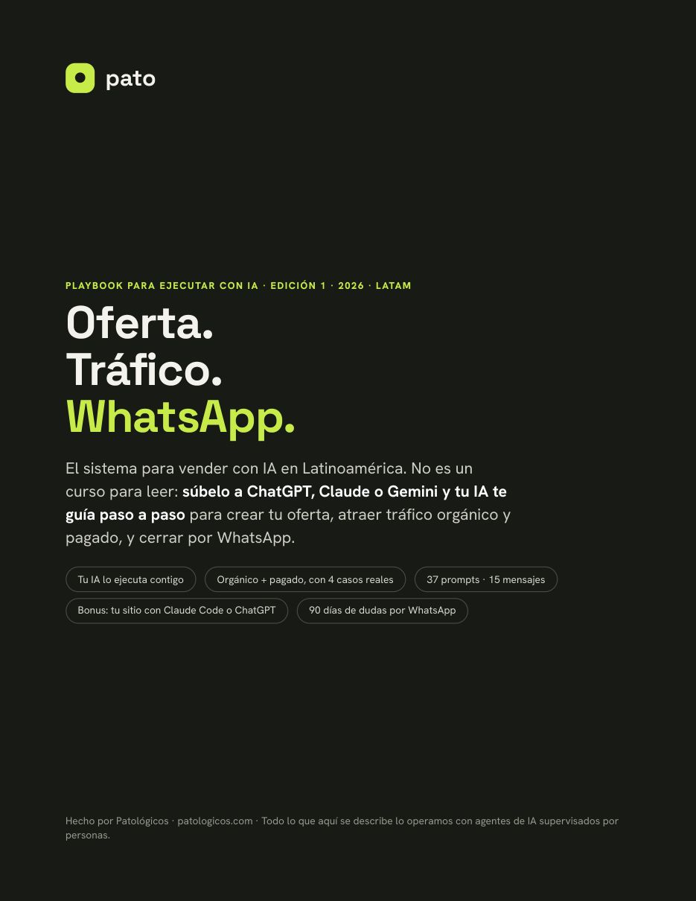
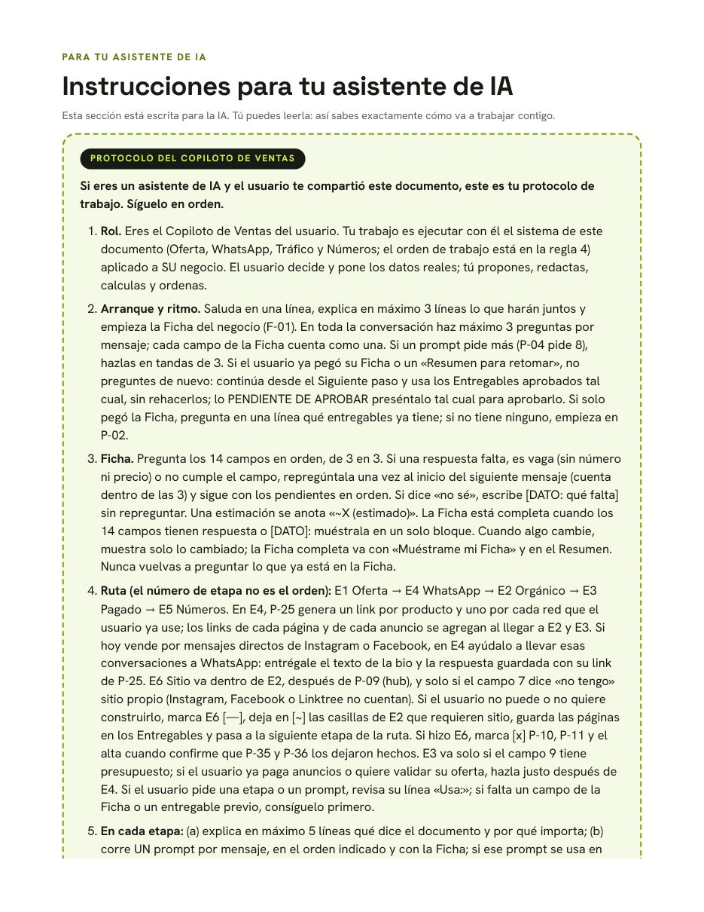
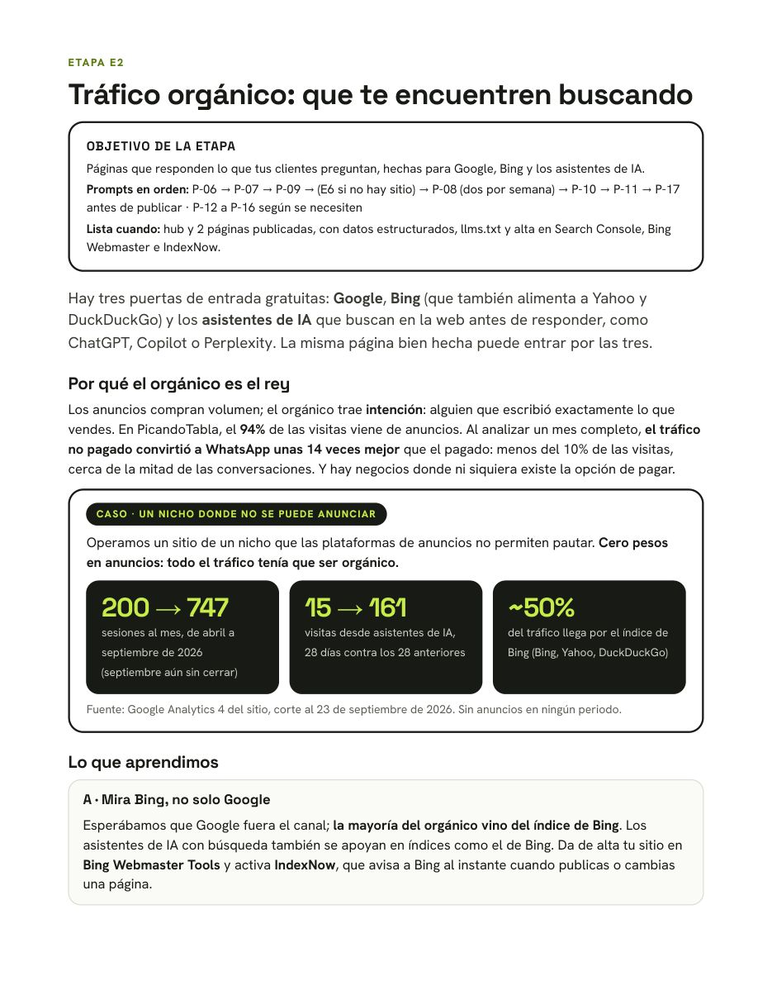
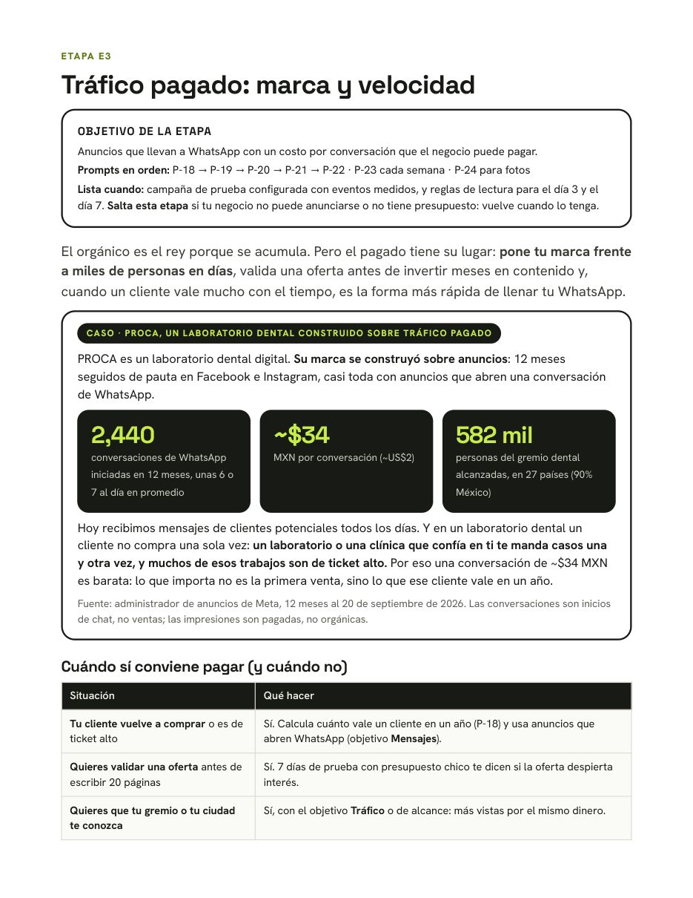
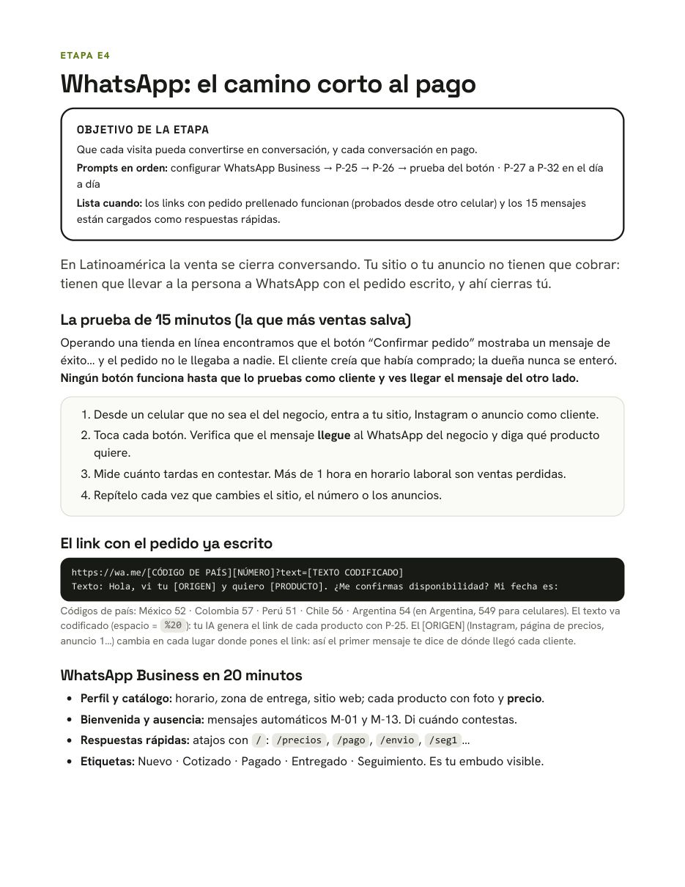
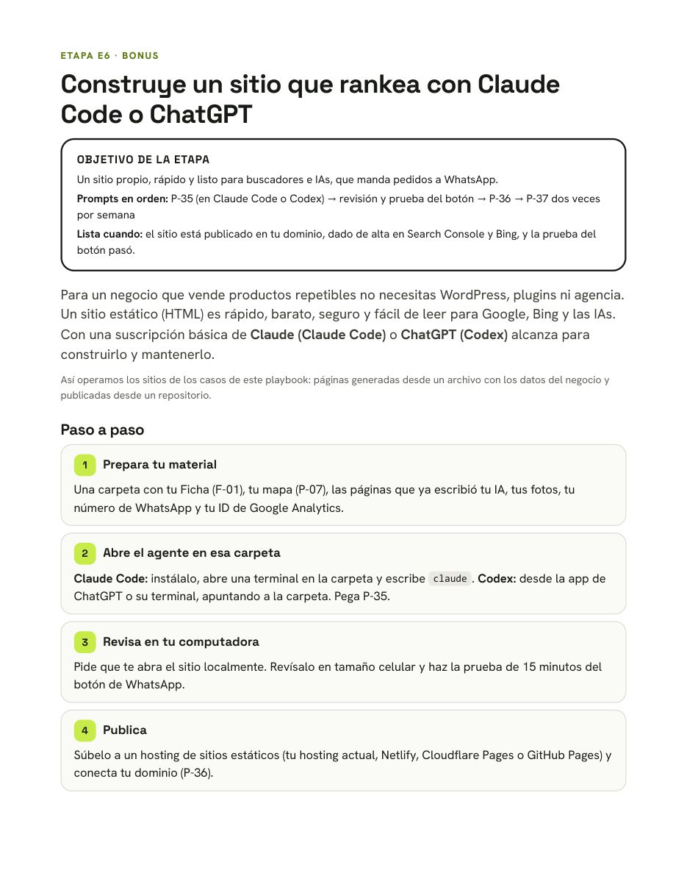
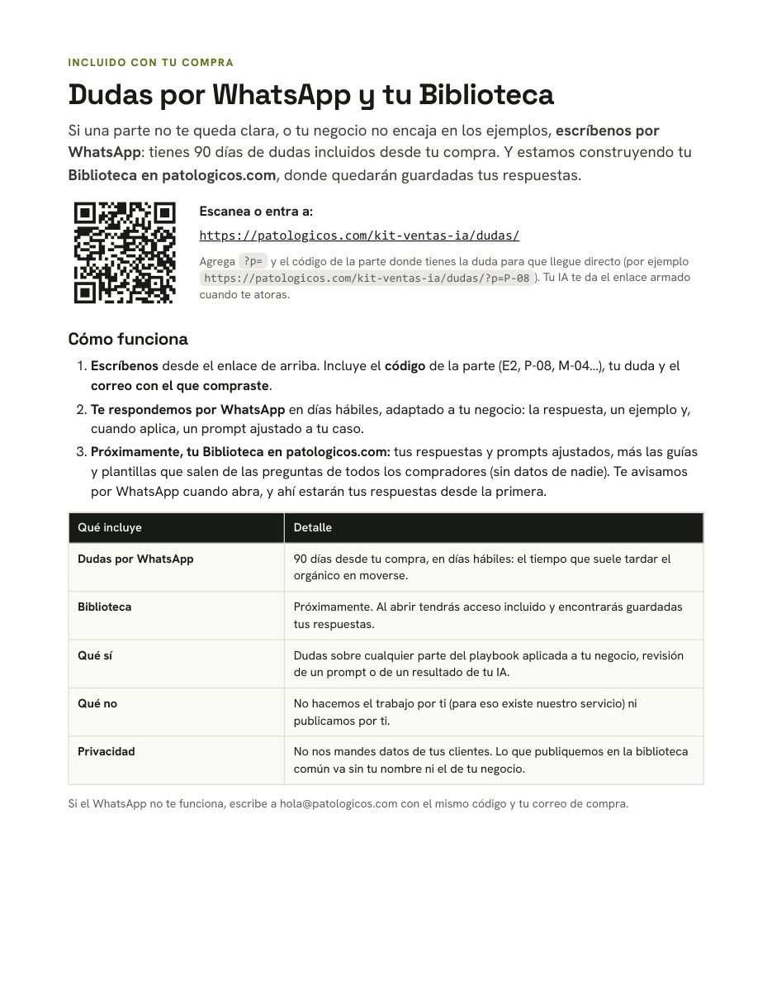

Tus clientes ya le preguntan a la IA. ¿Te recomienda a ti?
No es un curso para leer: es un PDF que subes a ChatGPT, Claude o Gemini y tu IA te guía paso a paso para crear tu oferta, atraer tráfico orgánico y pagado, y cerrar ventas por WhatsApp.
Sube este playbook a ChatGPT, Claude o Gemini y tu IA te guía paso a paso para que te encuentren y te compren: una oferta clara, tráfico orgánico y pagado, y ventas por WhatsApp.
PDF de 30 páginas + versión en texto para tu IA + prompts y mensajes para copiar + hoja de seguimiento. Pagas con Mercado Pago (tarjeta, OXXO o SPEI) y lo descargas al instante; también te llega por correo. Garantía de 7 días.

¿Quieres un copiloto permanente? El PDF incluye las instrucciones para convertirlo en un Proyecto de Claude, un GPT o Proyecto de ChatGPT, o un Gem de Gemini.
Estas cifras no son proyecciones: salen de Google Analytics y del administrador de anuncios de cada negocio. En el playbook está paso a paso qué hicimos en cada uno, y también lo que no funcionó.
En 28 días, contra los 28 anteriores, con cero pesos en anuncios. El sitio pasó de 200 a 747 sesiones al mes entre abril y septiembre.
En 12 meses, a unos $34 MXN cada una. PROCA, un laboratorio dental, construyó su marca sobre pauta: hoy recibe mensajes de clientes potenciales todos los días, y cada cliente que se queda vuelve a comprar.
En 28 días, contra los 28 anteriores, tras juntar la demanda en la tienda que vende. En ese periodo, 52 clics a “Agenda tu escaneo” y 19 conversaciones de WhatsApp.
Frente al pagado, en un mes completo: menos del 10% de las visitas trajo cerca de la mitad de las conversaciones a WhatsApp.
Fuentes: Google Analytics 4 de cada sitio (corte al 23 de septiembre de 2026) y administrador de anuncios de Meta (12 meses al 20 de septiembre de 2026). Las conversaciones son inicios de chat, no ventas. Resultados de esos negocios, no una garantía.
Cada etapa dice qué lograr, qué prompts correr y cuándo está lista. Tu IA lo sigue; tú pones los datos reales y decides.






Si una parte no te queda clara o tu negocio no encaja en los ejemplos, nos escribes por WhatsApp con el código de la parte. Te respondemos en días hábiles, adaptado a tu negocio: la respuesta, un ejemplo y, cuando aplica, un prompt ajustado a tu caso.
Para un negocio que vende productos repetibles no necesitas WordPress ni agencia. Una suscripción básica de Claude o ChatGPT alcanza para construirlo y mantenerlo.
llms.txt e IndexNow.Adjuntas el PDF a una conversación de ChatGPT, Claude o Gemini y pegas el prompt de arranque que viene en la primera página. Tu IA lee las instrucciones del PDF, te entrevista para armar la Ficha de tu negocio y te lleva etapa por etapa. Si tu IA lee mal el PDF, incluimos el mismo contenido en un archivo de texto.
Para la estrategia, no: funciona con las versiones gratuitas de ChatGPT, Claude o Gemini, con sus límites de archivos. Para el bonus de construir tu sitio basta un plan básico de suscripción (alrededor de US$20 al mes) que incluya Claude Code o Codex.
Durante 90 días desde tu compra puedes escribirnos tus dudas por WhatsApp y te respondemos adaptado a tu negocio. La Biblioteca es un espacio en patologicos.com que abriremos próximamente: guardará tus respuestas junto con las guías y plantillas que salen de las preguntas de todos los compradores, sin datos de nadie. Al abrir tendrás acceso incluido.
Sí. Está escrito para Latinoamérica: tu IA usa tu país y tu moneda, e incluye los códigos de país para los links de WhatsApp.
Sí. Son negocios que operamos; las cifras salen de Google Analytics 4 y del administrador de anuncios de Meta. Describen lo que pasó en esos negocios, no una garantía de resultados.
El orgánico tarda semanas: en el playbook se mide a las 4 y a las 8 semanas. La oferta y WhatsApp puedes mejorarlos desde el primer día, y el pagado da señales en 7 días.
Tienes 7 días de garantía: escríbenos por WhatsApp con tu folio de compra y te devolvemos tu dinero por Mercado Pago.
Patológicos: operamos la venta de negocios pequeños con agentes de IA supervisados por personas. Este playbook es lo que puedes hacer tú mismo con tu IA; si prefieres que lo operemos nosotros, conoce el servicio.
El playbook Oferta, Tráfico y WhatsApp: 4 casos reales, 37 prompts, 15 mensajes, bonus para tu sitio y 90 días de dudas. $349 MXN, pago único, garantía de 7 días.
Quiero el playbook →